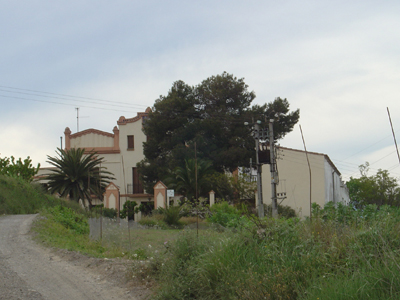
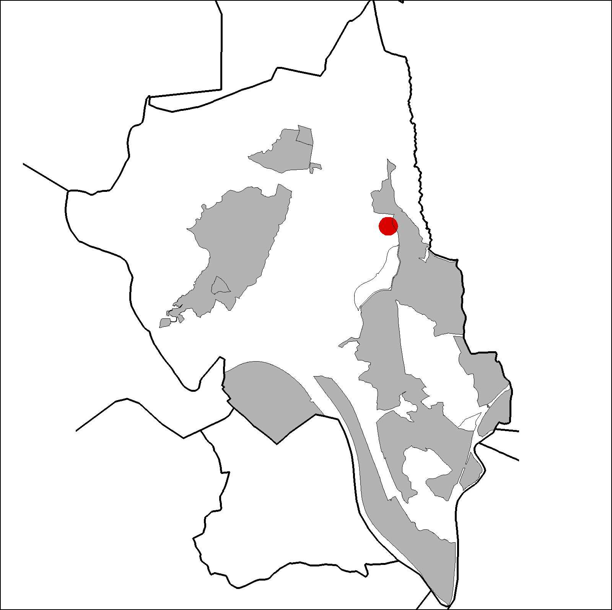

|  |  |
Nom de l’element: Can Costa
Clau d’identificació: B.1.04
Nucli o indret: Davant del Barri de Can Costa.
UTM: X= 415.136, Y= 4.593.939, 174,50 snm.
Referència cadastral: Poligon 02. parcel·la 9503 (08053A00209503)
Règim del sòl: Sòl no urbanitzable
1.1. Època de construcció i tipologia:
Casa pairal del s.XVIII (l’originària era del 1506), d’estil noucentista. La façana manifesta una interpretació eclèctica del clasicisme. Els murs són de mamposteria arrebossats i les cobertes a dues aigües de fusta i teula. Està formada per tres cossos principals, essent el central el de major altura, aprofitant-se el volum per a les golfes. Té planta baixa, planta pis i golfes. Els elements més característics són els remats de la façana, els cossos laterals i el frontó triangular amb decoració que imita frisos dòrics. El cos central és rematat amb un motllurat de gola inversa decorat amb ceràmica de trencadís. Hi ha sis volums en total. Presenta dues ales laterals que tanquen el pati que dóna a la façana principal orientada al sud. El celler s’utilitza actualment com a àrea d’envasament i d’emmagatzematge de fruites.
1.2. Estat de conservació:
En general, presenta un estat bo de conservació. La façana i les obertures presenten un estat de conservació mitjà; les estructures portants, forjats, voltes, cobertes, el paviment i els acabats interiors es troben en bon estat.
1.3. Ús actual:
Habitatge i agrícola. Es troba envoltada de conreus, especialment d’arbres fruiters.
1.4. Accés:
Accés fàcil a través d’un camí d’accés des de la carretera B-151 al seu pas pel barri de Can Costa.
Casa pairal del segle XVIII, d’estil noucentista.
3.1. Usos admesos:
Habitatge rural (màxim 3 habitatges); residencial; hoteler (excepte aparthotel; i amb un màxim de 30 places); oficines i serveis; industria vinculada a productes del camp (industrial, categoria 1ª); educatiu; recreatiu cultural i social; recreatiu de restauració; esportiu.
3.2. Condicions d’ordenació:
Segons Pla Especial a redactar.
3.3. Accés i serveis:
Camí d’accés des de la carretera B-151 al seu pas pel barri de Can Costa. Disposa de servei d’aigua corrent i d’electricitat.
BCIL (Bé Cultural d’Interes Local)